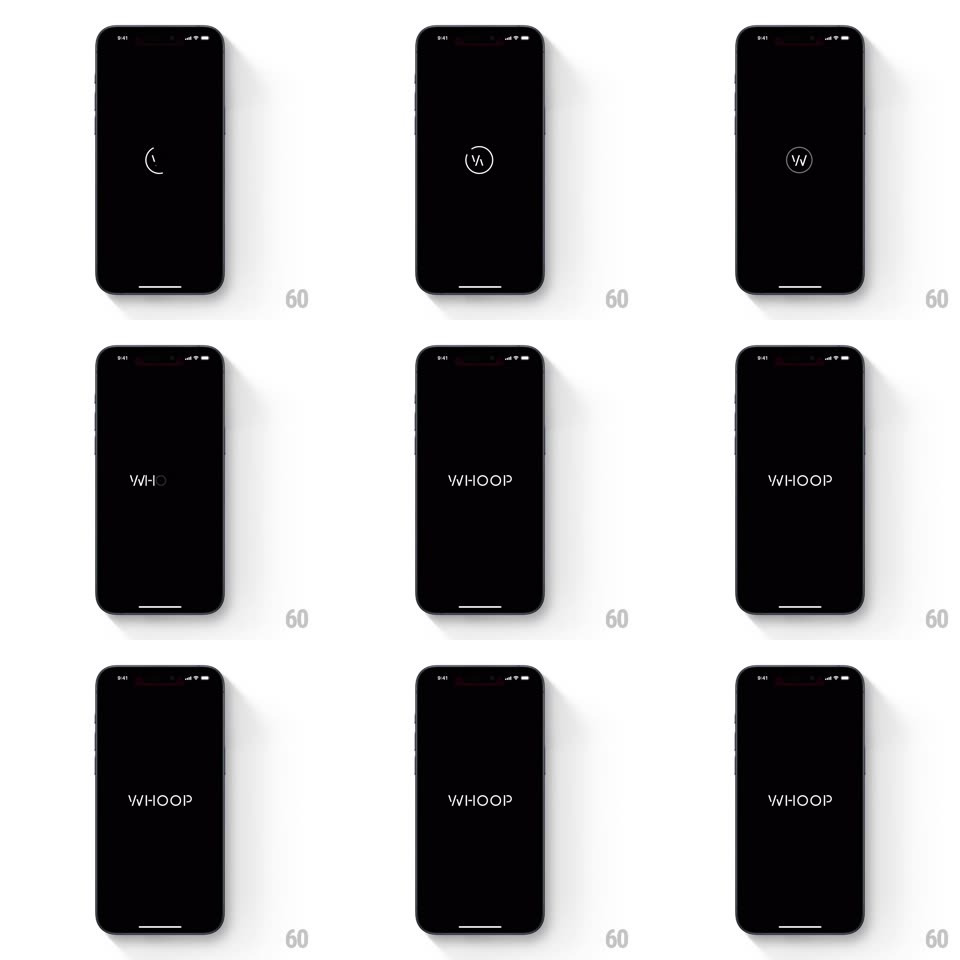

Media
Frame-by-frame

Rebuild this interaction 1:1: WHOOP's splash - a thin circular spinner arc rotates on black, then morphs: the arc closes into a ring and the WHOOP wordmark draws out of it letter by letter.

Rebuild this interaction 1:1: WHOOP's splash - a thin circular spinner arc rotates on black, then morphs: the arc closes into a ring and the WHOOP wordmark draws out of it letter by letter. ## Integration Integration: stack-agnostic spec - springs given as stiffness/damping, timed motions as duration + curve; map every value to your framework and animation library of choice. ## Scene A black screen. Center: a faint WHOOP mark, then a thin white circular arc rotating like a minimal spinner. The arc completes into a full ring containing a W, then the ring dissolves into the wordmark as W-H-O-O-P letters draw in sequence, settling as the crisp white "WHOOP". ## Motion spec Pattern: spinner-to-wordmark stroke morph. - Phase 1: a 270deg arc rotates continuously (1rev/1.1s, linear), stroke ~2px, pure white on black. - Phase 2: the arc decelerates and completes into a closed ring (stroke-end tween, 350ms, ease-out); a W draws inside the ring (stroke reveal, 250ms). - Phase 3: the ring expands and fades (scale 1 to 1.6 + opacity to 0, 300ms) while the wordmark letters draw left-to-right as strokes (each letter 120ms, 60ms stagger) - the final P's bowl picks up the ring's motion, so the spinner visibly BECOMES the last letter. - Hold: the wordmark sits 700ms with a hairline tracking settle (letter-spacing -0.02em to final, 300ms), then the splash crossfades to the app (400ms). - Total sequence under 2.5s; no easing theatrics - everything is smooth, minimal, and confident. ## Calibration - Monoline strokes only: the spinner, the ring, and the letterforms share one stroke weight. - Absolutely nothing else on screen - no tagline, no version string, no progress bar. ## Reduced motion Skip rotation; letters fade in sequence. ## Don't miss - The P completing from the spinner arc is the trick - plan the geometry so the handoff is invisible. - White on pure black throughout; the mark never glows or shadows.